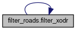

- Generated on Thu Aug 27 2026 16:39:40 for Carma-platform by
 1.9.4
1.9.4
|
Carma-platform v4.11.0
CARMA Platform is built on robot operating system (ROS) and utilizes open source software (OSS) that enables Cooperative Driving Automation (CDA) features to allow Automated Driving Systems to interact and cooperate with infrastructure and other vehicles through communication.
|
Functions | |
| def | filter_xodr (input_file, output_file, road_ids_to_keep) |
Variables | |
| dictionary | road_ids_to_keep = {"23"} |
| string | input_file = "original_map.xodr" |
| string | output_file = "filtered_map.xodr" |
Purpose: This script filters an .xodr map file to retain only a specified subset of roads based on their IDs. Key Features: - Allows user to define a set of road IDs to keep (road_ids_to_keep). - Removes all roads and junctions not associated with the specified IDs. - Outputs a new .xodr file containing only the filtered elements. Use Case: Creating a trimmed-down version of a map with only selected road segments for focused simulation or testing.
| def filter_roads.filter_xodr | ( | input_file, | |
| output_file, | |||
| road_ids_to_keep | |||
| ) |
Definition at line 24 of file filter_roads.py.
References filter_xodr().
Referenced by filter_xodr().

| string filter_roads.input_file = "original_map.xodr" |
Definition at line 21 of file filter_roads.py.
| string filter_roads.output_file = "filtered_map.xodr" |
Definition at line 22 of file filter_roads.py.
| dictionary filter_roads.road_ids_to_keep = {"23"} |
Definition at line 17 of file filter_roads.py.